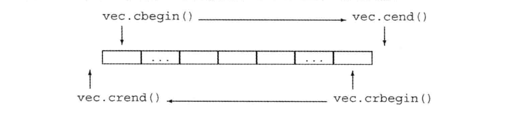
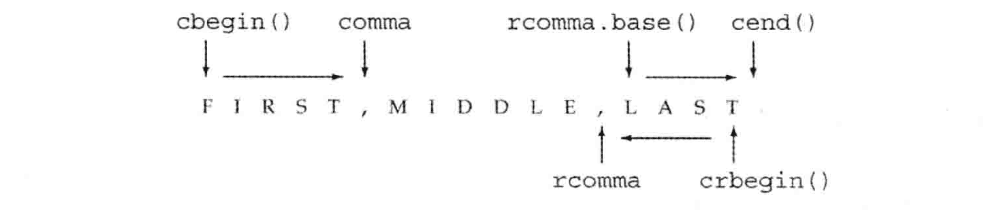

Primer C++ 5th 完全笔记（第09-13章）
文接上回，本文将记录全书第9-13章中出现的知识点，这几章主要介绍了 C++ 中有关顺序容器、泛型算法、关联容器、动态内存以及拷贝控制等相关内容。注意这些知识点的记录完全遵循我个人的想法，因此也仅适配我个人的情况和需求，未记录的其他知识点并非不重要。
- (Page：292) 常用顺序容器类型：
- vector：可变大小数组，支持随机访问，尾部以外的位置插入或删除数据可能很慢；
- deque：双端队列。支持随机访问，在头尾插入删除数据很快；
- list：双向链表。只支持 双向顺序访问，任何位置插入/删除数据都很快；
- forward_list：单向链表。单向顺序访问，任何位置插入/删除数据都很快；
- array：固定大小数组；
- string：保存字符，尾部插入/删除速度快；
- （Page：295）常用的容器类型别名：iterator、const_iterator、size_type、difference_type、value_type、reference、const_reference；
- （Page：299）可以将普通的 iterator 赋值给 const_iterator，反之则不行。
std::list<int> x = {1, 2, 3};
std::list<int>::const_iterator it = x.begin();
- （Page：300）通过迭代器进行容器元素拷贝：
std::vector<const char*> snippets = {"a", "an"};
// 对于输入范围的每一个元素，都会隐式调用 string 的构造函数；
std::forward_list<string> words(snippets.begin(), snippets.end());
- （Page：301）内置数组不能进行拷贝和赋值操作，但标准库的 std::array 容器类型却可以，但需保证目标容器的大小和元素类型与当前容器相同。
- （Page：302）std::array 类型不支持 assign。assign 和赋值会导致左侧容器内部的迭代器、引用和指针失效。而 swap 交换容器内容则不会（array 和 string 除外）。swap 两个 array 会真正交换它们的元素（速度较慢，效率与元素数目成正比），因此指针、引用和迭代器绑定的元素保持不变，但值发生了变化。其他容器则是指向了新的交换后的元素（元素本身并未交换，只是容器内部数据结构被交换，因此交换时间是常数级别）。
- （Page：304）容器之间的关系运算符比较依赖于其中元素对关系运算符的实现。
- （Page：308）利用 insert() 从容器首位置插入元素：
int main(int argc, char **argv) {
std::string word;
std::list<string> lst;
auto iter = lst.begin();
while (cin >> word) {
iter = lst.insert(iter, word); // 在给定位置之前插入元素，指向新插入元素的迭代器；
}
return 0;
}
- （Page：309）使用 emplace \ emplace_back \ emplace_front 可以直接在容器内指定位置构造对象，减少拷贝构造的过程。
- （Page：309）begin() / end() 返回迭代器，front() / back() 返回元素的引用。
- （Page：310）容器的 at() 方法会进行下标访问的 bound-check 越界检测，即下标越界时会抛出
out_of_range异常，但可以保证元素访问的合法。否则可以直接使用 [] 来更高效地访问元素，但可能会引起运行时错误。 - （Page：313）从 forward_list 单向列表中添加/删除元素一般需要”双指针“，一个指向需要处理的元素，一个指向其前驱元素。因为单向链表删除或添加元素会影响前一元素的 next 指针。添加或删除元素只能通过其前驱元素进行操作。
int main(int argc, char **argv) {
std::forward_list<int> flst = {1, 2, 3, 4, 5};
auto prev = flst.before_begin();
auto curr = flst.begin();
while (curr != flst.end()) {
if (*curr % 2) {
curr = flst.erase_after(prev); // 删除后 curr 会指向无效指针；
} else {
prev = curr++;
}
}
}
- （Page：315）deque 可以用来判断回文。
- （Page：316）容器 erase() 方法返回删除元素之后元素的迭代器；insert() 方法在给定元素之前插入元素，然后返回指向新元素的迭代器。
- （Page：318）当不得不获取新的内存空间时，std::vector 和 std::string 通常会分配比新空间需求更大的内存空间以作为备用。在内存连续的容器中，size 表示当前容器存有多少个元素，capacity() 返回当前容器的可用元素空间。
int main(int argc, char **argv) {
std::string str = "Hello, world!";
// str.reserve(120);
std::cout << str.capacity();
}
- （Page：328）巧用 find_first_of() 进行字符数字转换：
int main(int argc, char **argv) {
std::string str = "pi = 3.14";
double d = std::stod( // 转换成浮点数；
str.substr( // 获得子字符串；
str.find_first_of("+-.0123456789"))); // 返回第一个匹配的位置；
std::cout << d;
}
- （Page：330）容器适配器，基于已有的顺序容器来模拟其他数据结构：stack（deque）、queue（deque）、priority_queue（vector）。
- （Page：337）泛型算法一般通过遍历“一个左闭右开 [i, j) 的迭代器范围”来操作容器中的元素。
int main(int argc, char **argv) {
std::list<int> lst = {1, 2, 4};
auto result = std::find(lst.cbegin(), lst.cend(), 2);
std::cout << *result; // 返回指向目标元素的迭代器；
return 0;
}
- （Page：339）算法和元素类型：
int main(int argc, char **argv) {
std::vector<string> v = {"Hello", ", world!"};
std::string sum = std::accumulate(v.cbegin(), v.cend(), std::string("")); // 最后参数决定返回值类型，和使用的“+”运算符；
std::cout << sum << std::endl;
return 0;
}
- （Page：339）那些只接受一个单一迭代器来表示第二个序列的算法，都假定第二个序列至少与第一个序列一样长。
- （Page：340）fill() / fill_n() 不能在空容器（size 为 0）上进行，算法不会执行容器操作，因此它们自身不可能改变容器大小。但 fill_n() 可以配合插入迭代器向空容器插入元素：
int main(int argc, char **argv) {
std::vector<int> vec;
std::fill_n(std::back_inserter(vec), 10, 0);
return 0;
}
- （Page：342）std::replace 的 copy 版本与 in-place 版本：
int main(int argc, char **argv) {
std::list<int> lst = {1, 2, 3};
std::vector<int> vec;
std::replace(lst.begin(), lst.end(), 0, 42); // in-place 版替换；
std::replace_copy(lst.cbegin(), lst.cend(), std::back_inserter(vec), 2, 42); //生成新副本版替换；
return 0;
}
- （Page：346）lambda 表达式是内联函数，不能有默认实参：
[capture list](params) -> return type { body };
- （Page：348）一个 lambda 只有在其捕获列表中捕获一个它所在函数中的局部变量，才能够在函数体中使用该变量。
- （Page：350）lambda 会实例化生成对应的类对象，并将捕获列表中的变量变成该类对象的数据成员。lambda 值捕获的变量是在 lambda 创建时进行拷贝，因此一旦创建成功后其值便不会再改变，为此可以使用引用捕获。
- （Page：352）lambda 捕获列表：
int main(int argc, char **argv) {
int x = 100;
int y = 200;
[=]() { cout << x << endl; }(); // 值捕获；
[&]() { cout << y << endl; }(); // 引用捕获；
[=, &y]() { y += x; }(); // 混合捕获；
[&, x]() { cout << y << endl; }(); // 混合捕获；
return 0;
}
- （Page：352）lambda 的非 cosnt 捕获值拷贝（闭包和匿名函数经常被用作同义词。但严格来说，匿名函数就是字面意义上没有被赋予名称的函数，而闭包则实际上是一个函数的实例，也就是说它是存在于内存里的某个结构体。如果从实现上来看的话，匿名函数如果没有捕捉自由变量，那么它其实可以被实现为一个函数指针，或者直接内联到调用点，如果它捕捉了自由变量那么它将是一个闭包；而闭包则意味着同时包括函数指针和环境两个关键元素。在编译优化当中，没有捕捉自由变量的闭包可以被优化成普通函数，这样就无需分配闭包结构体，这种编译技巧被称为函数跃升）：
int main(int argc, char **argv) {
int x = 100;
auto foo = [x]() mutable { // mutable 关键字；
x += 1; // x 成为 lambda 隐式类对象的非 const 成员；
std::cout << x << std::endl;
};
foo(); // 101；
foo(); // 102；
std::cout << x << std::endl; // 100；
}
- （Page：355）使用 bind 装饰 lambda 和普通函数：
int main(int argc, char **argv) {
auto foo = std::bind(
[](int x, int y) -> int { return x + y; },
std::placeholders::_1, 6); // 固定匿名 lambda 的第二个参数；
std::cout << foo(10) << std::endl;
return 0;
}
- （Page：357）bind 参数以引用形式传递（默认是值传递）：
int main(int argc, char **argv) {
int x = 100;
auto foo = std::bind(
[](int& x) { ++x; },
std::ref(x)); // 通过引用传递；
foo(x);
std::cout << x << std::endl;
return 0;
}
- （Page：358）insert() 和 inserter 插入迭代器的区别：前者返回插入新元素的迭代器位置，后者扔指向原位置（在给定位置前插入元素，但不移动）。
- （Page：360）流迭代器：
int main(int argc, char **argv) {
std::istream_iterator<int> in_iter(std::cin), eof; // 从 std::cin 读入数据；
std::ostream_iterator<int> out_iter(std::cout);
std::vector<int> vec(in_iter, eof); // 初始化容器；
for (const auto i : vec) {
*out_iter = i;
}
// cout << std::accumulate(in_iter, eof, 0) << endl; // 调用泛型算法；
return 0;
}
- （Page：363）反向迭代器：递增一个反向迭代器会移动到前一个元素；除了 forward_list，其他容器元素均支持该迭代器；无论是正向还是反向迭代器，其对应的首尾迭代器均构成“左闭右开”的区间。

int main(int argc, char **argv) {
std::string line = "FIRST,MIDDLE,LAST";
auto rcomma = std::find(line.crbegin(), line.crend(), ',');
std::cout << std::string(line.crbegin(), rcomma) << std::endl; // TSAL；
// base() 将反向迭代器便为普通迭代器；
std::cout << std::string(rcomma.base(), line.cend()) << std::endl; // LAST；
return 0;
}

- （Page：）5类迭代器（层次依次上升，高层次支持低层次的所有操作）：
- 输入迭代器；如 std::istream_iterator，只读；可进行判断、++、*、->；
- 输出迭代器：如 std::ostream_iterator，只输出；可进行判断、++、*、->；
- 前向迭代器：如 std::forward_list
::iterator，单向移动； - 双向迭代器：如 std::list
::iterator，双向移动； - 随机访问迭代器（除 std::list / std::forward_list）：常量时间访问序列元素，+=，-=、下标访问；
- （Page：369）对于 std::list 与 std::forward_list 来说，应该优先使用成员函数版本（改变节点间的链接）算法而非通用算法（需要交换元素，性能低）。
- （Page：371）迭代器的加入使得泛型算法可以与容器类型解耦，作为“中间件”提供了的统一的操作类型（五种迭代器类型）。算法从不直接改变它们所操作的序列大小。它们会将元素从一个位置拷贝到另一个位置，但不会直接添加或删除元素。类似 back_inserter 的迭代器为特殊的“输出迭代器”。
- （Page：372）lambda 可以对单一的返回语句进行隐式地类型推断。
- （Page：374）8个关联容器被分为三类：
- 或是一个 std::set，或是一个 std::map；
- 或要求不重复关键字，或允许重复关键字（multi）；
- 按顺序保存元素，或无序保存（unordered）；
- （Page：376）大多数的容器算法在未找到目标元素时会返回对应的 end() 即尾后迭代器。
- （Page：378）有序关联容器：std::map、std::set、std::multimap、std::multiset；有序关联容器使用 “<” 运算符的判断结果来对内容进行排序，因此对于重载了“<”运算符（保证一个严格弱序，即“小于等于”）的类型可以将其用作容器的关键字；因此，std::map 与 std::multimap 的元素搜索，插入和删除操作具有对数复杂性。std::map 一般通过红黑树实现。
- （Page：379）关联容器使用自定义的排序函数（注意：泛型中的函数指针只是表明了类型，并非真正传入函数指针）：
int main(int argc, char **argv) {
multiset<int, bool(*)(int, int)> s([](int x, int y) -> bool { return x <= y; });
s.insert(2);
s.insert(0);
s.insert(1);
for (const auto i : s) {
cout << i << endl;
}
return 0;
}
- （Page：381）关联容器常用类型别名：
- key_type 关键字类型；
- mapped_type 关键字关联的类型；
- value_type 值类型（std::map 值为 std::pair 类型，std::set 与 key_type 相同）；
- （Page：382）std::map 的 key_type 与 std::set 的 value_type 均是 const 的，因此无法通过迭代器进行修改。
- （Page：387）对 std::map 使用下标操作，对于不存在的元素将会添加一个具有此关键字的元素；相反可以使用 at() 作为替代，对于容器中不存在的元素则会抛出异常。
- （Page：389）std::map / std::unordered_map 的下标操作会产生副作用：对于不在容器中的元素 [] 访问时会插入默认值，可以使用 std::find 来查找特定元素是否在容器中。
- （Page：389）在 std::multimap 与 std::multiset 中，同名元素相邻存储。因此在查找到第一个元素的迭代器时，可以通过递增迭代器来访问其他的同名元素。但此时也要保证递增的步数小于等于 count() 方法查找到的目标元素个数。
- （Page：390）关联容器的 lower_bound() 与 upper_bound 可以构成一个“[)”的迭代器范围，当两者相等时目标元素不存在。
int main(int argc, char **argv) {
std::multiset<int> mset = {0, 1, 1, 2, 3, 4, 4};
const int aim = 1;
for (auto begin = mset.lower_bound(aim), end = mset.upper_bound(aim); begin != end; ++begin) {
std::cout << *begin << std::endl;
}
return 0;
}
- （Page：391）可以使用 equal_range() 来代替 lower_bound() 与 upper_bound() 的组合。
int main(int argc, char **argv) {
std::multiset<int> mset = {0, 1, 1, 2, 3, 4, 4};
const int aim = 1;
for (auto iters = mset.equal_range(aim); iters.first != iters.second; ++iters.first) {
std::cout << *iters.first << std::endl;
}
return 0;
}
- （Page：395）无序容器使用桶来保存具有相同 hash 值的元素，对于 std::unordered_multimap，具有相同关键字的元素会在同一个桶中。因此当桶内元素过多时，按顺序寻找特定元素的过程将会变慢。
- （Page：396）自定义类型在使用无序容器时需要自定义对应的 hash 函数以及 “==” 运算符的实现。
struct A {
friend std::hash<A>;
friend bool operator==(const A& x, const A& y);
A() = default;
A(int x) : x(x) {}
private:
int x = 0;
};
bool operator==(const A& x, const A& y) {
return x.x == y.x;
}
// std::hash 的一个对类 A 的模板特例化；
template<> struct std::hash<A> {
size_t operator()(const A& ins) const {
return std::hash<int>()(ins.x);
}
};
int main(int argc, char **argv) {
std::unordered_multiset<A> mset = {1, 1, 3};
std::cout << mset.count(1) << std::endl; // 2；
return 0;
}
- （Page：397）无论在有序容器还是无序容器中，具有相同关键字的元素都是相邻存储的。
- （Page：400）三种内存类型：
- 静态内存：static 对象在使用之前分配的内存，程序结束时销毁。比如指向类对象的静态成员；
- 栈内存：对应程序块运行时存在；
- 堆内存：程序自己控制内存的使用和释放；
- （Page：400）三种智能指针：
- std::shared_ptr：允许多个指针指向同一个对象；
- std::unique_ptr：独占所指向的对象；
- std::weak_ptr：弱引用，指向 std::shared_ptr 所管理的对象；
- （Page：402）std::shared_ptr 基本原理：
int main(int argc, char **argv) {
std::weak_ptr<int> gw;
auto sp1 = std::make_shared<int>(42); // sp1 指向的 int 只有一个引用者；
auto sp2 = sp1; // 递增 sp1 指向对象的引用计数，递减 sp2 原来指向对象的引用计数；
gw = sp1;
cout << gw.use_count() << endl; // 2；
return 0;
}
- （Page：403）如果将 std::shared_ptr 存放于一个容器中，而后不再需要全部元素，而只使用其中一部分，要记得用 erase() 删除不需要的元素。
- （Page：404）使用动态内存的一个常见原因是允许多个对象共享相同的状态。
- （Page：407）相较于 new，使用 std::shared_ptr 的对象成员可以在默认拷贝构造函数的情况下省去资源移动/拷贝的烦恼（无需在析构函数中手动释放内存，因此拷贝构造函数对 std::shared_ptr 的拷贝可以确保原对象的堆资源仍旧可以使用，并且不需要在对象间移动）。
- （Page：408）动态对象的直接初始化与默认初始化：
int main(int argc, char **argv) {
auto p1 = new int; // 默认初始化，内置类型值未定义；类类型默认构造函数初始化；
auto p2 = new int(); // 值初始化为 0；
return 0;
}
- （Page：408）对于单一的初始化器可以使用 auto 来推断类型：
class B {};
int main(int argc, char **argv) {
// auto p = new B();
auto p = new auto(B());
cout << typeid(p).name() << endl; // "P1B"；
return 0;
}
- （Page：408）动态分配 const 对象：
int main(int argc, char **argv) {
const int* p = new const int(1024); // 只读；
return 0;
}
- （Page：411）delete 之后重置指针：对于普通指向动态内存的指针来说，在 delete 之后还需将其值重置为 nullptr，以防悬挂指针被使用。
- （Page：412）接受指针参数的智能指针构造函数是 explicit 的，因此不能执行由普通指针到智能指针的隐式转换。
（Page：412）从 new 指针生成智能指针可能会有性能损耗。在一个典型的实现中 std::shared_ptr 包含有两个指针：1、指向动态对象（get()）的指针；2、指向一个“控制块”的指针；其中“控制块”主要用于维护与 std::shared_ptr 有关的比如：删除器、分配器、托管对象的智能指针引用数量以及引用托管对象的 std::weak_ptr 的数量。当通过 std::make_shared 生成指针时，上述两个指针对应的堆内存将在一次内存分配中完成，因此性能较好。而通过 std::shared_ptr 构造函数初始化的智能指针，上述两个对象将在两次堆内存分配中完成。注意其中控制块堆内存的释放与引用托管对象的 std::weak_ptr 的数量有关。
（Page：413）不要混用智能指针与原始指针（原始指针可能被智能指针提前释放，无法很好地控制其生命周期）。
- （Page：416）为 std::shared_ptr 设置自定义删除器：
struct B {};
int main(int argc, char **argv) {
std::shared_ptr<B> sp(new B(), [](B* b) { delete b; });
}
- （Page：417）std::unique_ptr 不支持普通的拷贝和赋值，某一时刻只能有一个 std::unique_ptr 指向一个给定对象。可以在 C++14 之后使用 std::make_unique 创建 std::unique_ptr。
- （Page：418）release() 返回 std::unique_ptr 当前保存的指针并将其变量置为空指针，但不会释放内存，一般用于重新初始化其他类型的智能指针；reset() 接受一个指针参数，重置对应的 std::unique_ptr 指针，原指针对应的对象将被释放。std::unique_ptr 无法被拷贝，但可以作为函数参数或返回值（被移动）。
struct B {
B(int x) : x(x) {}
int x;
};
int main(int argc, char **argv) {
auto up1 = std::make_unique<B>(10);
auto up2 = std::make_unique<B>(20);
auto nup = std::unique_ptr<B>(up1.release()); // 释放 up1 用于初始化 nup；
up2.reset(nup.release()); // 释放 nup 用于重置 up2，up2 原先指向的内存被回收；
// 可以移动一个 std::unique_ptr；
auto moveUp = move(up2); // 不需要再对 up2 进行 reset()，默认会变为 nullptr；
cout << moveUp->x << endl; // 10；
return 0;
}
- （Page：420）std::weak_ptr 不控制所指向对象的生存期，指向由一个 std::shared_ptr 管理的对象。一般用于做 std::shared_ptr 的辅助类来观察对应智能指针的存活状态。
int main(int argc, char **argv) {
auto p = std::make_shared<int>(10);
std::weak_ptr<int> wp(p);
std::cout << wp.use_count() << std::endl; // 与 wp 共享对象的 std::shared_ptr 数量；
std::cout << wp.expired() << std::endl;
if (shared_ptr<int> np = wp.lock()) { // 有效则返回 std::shared_ptr 否则返回 nullptr；
std::cout << *np << std::endl;
}
return 0;
}
- （Page：424）动态数组初始化可以使用列表初始化：std::unique_ptr 可以直接支持管理动态数组，而 std::shared_ptr 则需要提供自定义的删除器以支持动态数组：
int main(int argc, char **argv) {
int* e = new int[0]; // 可以创建大小为 0 的空动态数组，但无意义；
int* p = new int[10]{1, 2, 3};
auto sp = shared_ptr<int>(e, [](int* p) { delete [] p; }); // 自定义 deleter；
auto up = unique_ptr<int[]>(p);
return 0;
}
- （Page：429）使用 std::allocator 类将内存分配与对象构造分离：
struct B {
B(int x) : x(x) {}
int x;
};
int main(int argc, char **argv) {
std::allocator<B> alloc;
const int num = 2;
auto p = alloc.allocate(num); // 分配可保存 num 个对象的未初始化内存；
for (auto i = 0; i < num; ++i) {
alloc.construct(p++, i + 10); // 在 p 指向的内存上构造 B 对象；
alloc.destroy(--p); // 析构对象；
}
alloc.deallocate(p, num); // 释放内存；
return 0;
}
- （Page：429）使用伴随算法填充 std::allocator 分配的未初始化的内存：
int main(int argc, char **argv) {
std::vector<int> v = {1, 2, 3, 4};
std::allocator<int> alloc;
auto p = alloc.allocate(v.size());
auto q = std::uninitialized_copy(v.begin(), v.end(), p); // 根据输入范围拷贝，返回填充最后元素之后的位置；
cout << *p << endl; // 1；
// uninitialized_fill_n(p, vi.size(), 10); // 直接填充；
return 0;
}
- （Page：444）对于内置数组类型，编译器生成的拷贝构造函数可以正常地对其进行拷贝构造。
struct B {
B(int x) { arr[0] = x; }
int arr[1];
};
int main(int argc, char **argv) {
B x(1), y = x; // y 从 x 拷贝构造生成；
cout << y.arr[0] << endl; // 1；
return 0;
}
- （Page：445）析构函数默认会按照构造函数初始化成员顺序（成员定义的先后顺序）的逆序来销毁成员。
- （Page：448）三五法则：如果类需要析构函数，则同时需要拷贝构造函数以及拷贝赋值函数（否则多个对象会指向同一个将被销毁的堆内存）；
- （Page：449）当存在用户定义的拷贝构造函数时，用户仍可用关键词 default 强迫编译器生成隐式内联的拷贝构造函数。
- （Page：450）定义成 delete 删除的函数不能被调用，因此可以通过该关键字来阻止类对象的拷贝、赋值和移动。若析构函数被标记为 delete 则该类对象不能被销毁（delete）。
- （Page：451）本质上，当不能拷贝、赋值或销毁类成员时，类的合成拷贝控制成员就被定义为删除。
- （Page：454）编写赋值构造函数时需要满足可以进行“自赋值”，因此进行资源释放和拷贝的顺序便成了关键。一个好的方式是先拷贝右侧的运算对象，再释放资源。
struct B {
int* arr;
size_t size;
B(int x) : size(x) { arr = new int[x]{x}; }
~B() { delete arr; }
B& operator=(const B& rhs) { // 拷贝构造，不修改原对象；
if (&rhs != this) {
delete arr;
size = rhs.size;
arr = new int[rhs.size];
for (auto i = 0; i < size; ++i) {
*(arr + i) = *(rhs.arr + i); // 拷贝；
}
}
return *this;
}
B& operator=(B&& rhs) noexcept { // 移动构造函数必须为 noexcept 以适应标准库容器；
if (&rhs != this) {
delete arr;
size = rhs.size;
arr = rhs.arr; // 栈上的对象一般需要 std::move，否则会被析构；
rhs.arr = nullptr; // 防止原堆数据被原对象析构；
}
return *this;
}
};
int main(int argc, char **argv) {
B x(10), y(20);
y = x;
y = std::move(x); // 移动后不能再使用 x；
y = std::move(y);
for (auto i = 0; i < y.size; ++i) {
cout << i << ' ' << *(y.arr + i) << endl;
}
return 0;
}
- （Page：471）右值引用指向将要被销毁的对象。变量是左值，因此不能将一个右值引用直接绑定到一个变量上，即使这个变量是右值引用类型。我们可以销毁一个移后源对象，也可以赋予它新值，但不能使用一个移后源对象的值。要区分“引用了一个右值”和“右值”的区别：引用一个右值就是表示一个右值引用，这个变量本身还是一个左值；而右值表示“将亡值”或“纯右值”。
- （Page：473）移动构造函数会帮我们自动接管内存，但需要我们自己处理新对象指针的指向，以防止接管内存被原对象释放。
- （Page：474）通过将移动构造/赋值函数标记为 noexcept 来告诉编译器在资源的移动过程中不会发生异常，进而让标准库容器优先使用移动构造函数而非拷贝构造函数。
- （Page：476）只有当一个类没有定义任何自己版本的拷贝控制成员（拷贝构造、赋值和析构函数），且它的所有数据成员都能移动构造或移动赋值时，编译器才会为它合成移动构造或移动赋值函数。
- （Page：477）定义了一个移动构造函数或移动赋值函数的类也必须定义自己的拷贝操作，否则这些成员默认被定义为删除，类对象将不能进行赋值。
- （Page：479）三五法则：一般来说，如果一个类定义了任何一个拷贝操作，那就应该定义所有的五个操作（析构函数、拷贝构造、拷贝赋值、移动构造、移动赋值）。
- （Page：481）移动迭代器：解引用返回右值引用，可以用 std::make_move_iterator 将普通迭代器转换成返回右值的迭代器。
- （Page：483）引用限定符：限定类对象的 this 是否可以指向一个左值还是右值；必须同时出现在成员函数的声明和定义中。
struct B {
int sum = 0;
B() = default;
void add(int x) & { sum += 0; } // 只能在左值对象上调用；
int eval() const && { return sum; } // 只能在右值对象上调用；
};
int main(int argc, char **argv) {
B b;
b.add(10);
cout << B().eval() << endl;
return 0;
}
- （Page：485）如果一个成员函数有引用限定符，则具有相同参数列表的所有版本都必须有引用限定符（必须互不相同）。